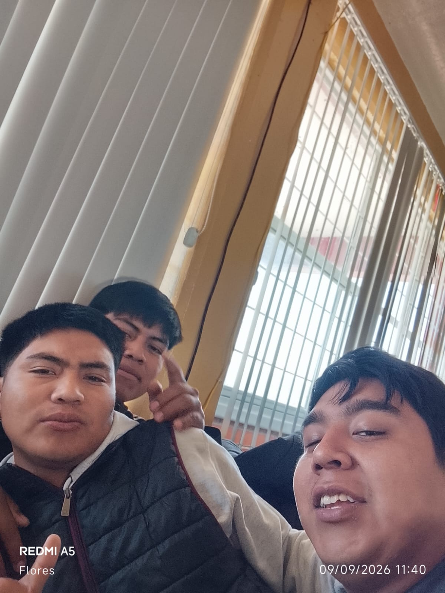

Nosotros somos Gabriel Flores, Rúben González y Angel Gabriel Flores y juntos somos los tres mosqueteros.

Nombres |
Cualidades |
Defectos |
Gabriel Flores |
Honesto Respeto Amable Solidario Empatico Tolerante Paciente Trabajador Leal Perseverante |
Desconfianza Terquedad Exigencia Exesiva Crueldad Indiferencia Inconsistencia Arrogancia Mala cominicación |
Angel Gabriel |
Responsable Respetuoso Honesto Amable Solidario Empatico Tolerante Paciente Puntual Trabajador Creativo Inteligente Leal |
Distraido Impaciente Desesperado |
Ruben |
Honestidad Empatia Generosidad Paciencia Humildad Alegria Respeto Lealtad Nonleza |
Enojo Irresponsabilidad Imputualidad |
* Mi nombre es Gabriel Flores y soy una persona responsable también me gusta respetar a las personas y sor honesto, amable y lo que más me gusta y me caracteriza es que soy muy empático con todas las personas y sobre todo paciente de igual manera me gusta ser puntual a cualquier lugar que voy.
*Pero ySoy Angel, una persona puntual, leal y amable. Soy una persona que le gusta pasar tiempo con sus amigos ya sea platicando o haciendo cualquier cosa para pasar el tiempo. Me gustan los gallos de pela, dado que me atrae el aspecto de estos por qué me parecen animales increíbles debido a su historia y a los distintos eventos en los que se suelen ocupar. Tambien me agrada jugar videojuegos en las noches antes de dormir daod que consideró que es la forma de desestresarme. Me gusta comer el mole de olla que prepara mi mamá y más cunado el clima es frío o lluvioso. De diciembre mi tiempo libre a la crianza de mis gallos de pelea, verificó si no tienen alguna enfermedad o problema y es algo que me agrada hacer. Tengo también algunos defectos como todas las personas peoe los más resistentes son el ser distraído, impaciente y desesperarme rápidamente. A pesar de mis defectos trato de mejorar cada día para que estos se vallan perdiendo.
*Soy Rubén González de Jesús soy una persona respetuosa y honesta. Me considero una persona que reconoce sus errores defectos que como enojarme rápido ser algo serio cuando no conozco a las personas que me rodean a veces soy irresponsable en las cosas que me dejan hacer o por mi flojera no hacer las cosas bien pero cuando estoy dispuesto a hacer las cosas las hago bien a veces soy una persona muy insegura por la falta de confianza. Me gustan escuchar mucho canciones de rap y rock y pues las cosas que me gustan comer son las enchiladas los sopes ,esquites los postres de comida favorita son los chilaquiles en mis tiempos libres me gusta salir a jugar fútbol distraerme con los amigos ir a caminar o a conocer otros lugares tengo muchas cualidades ya que debo de mejorar algunos de ellos y poner más ganas en lo que hago